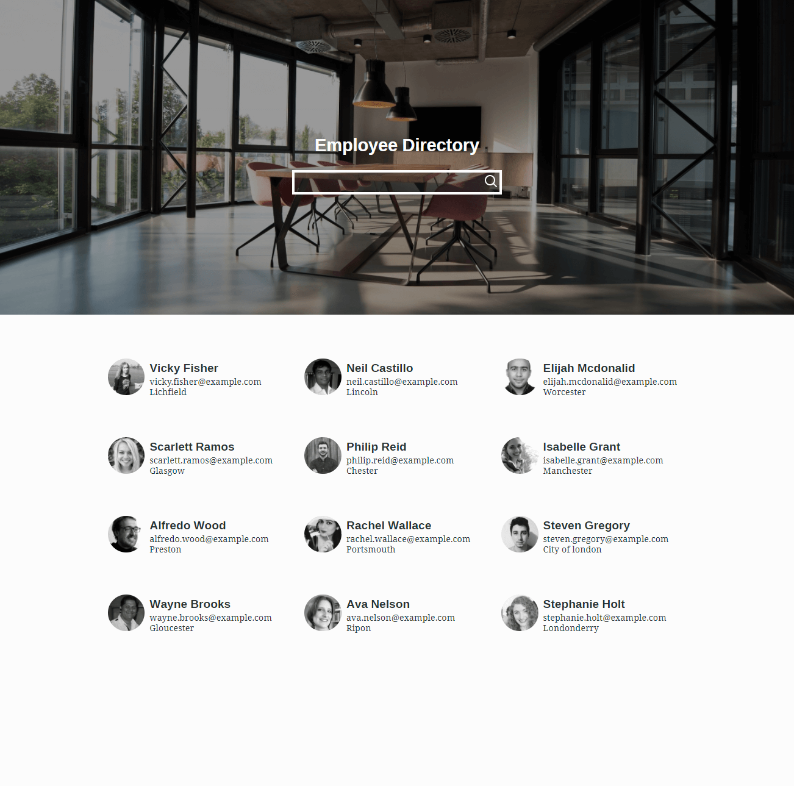
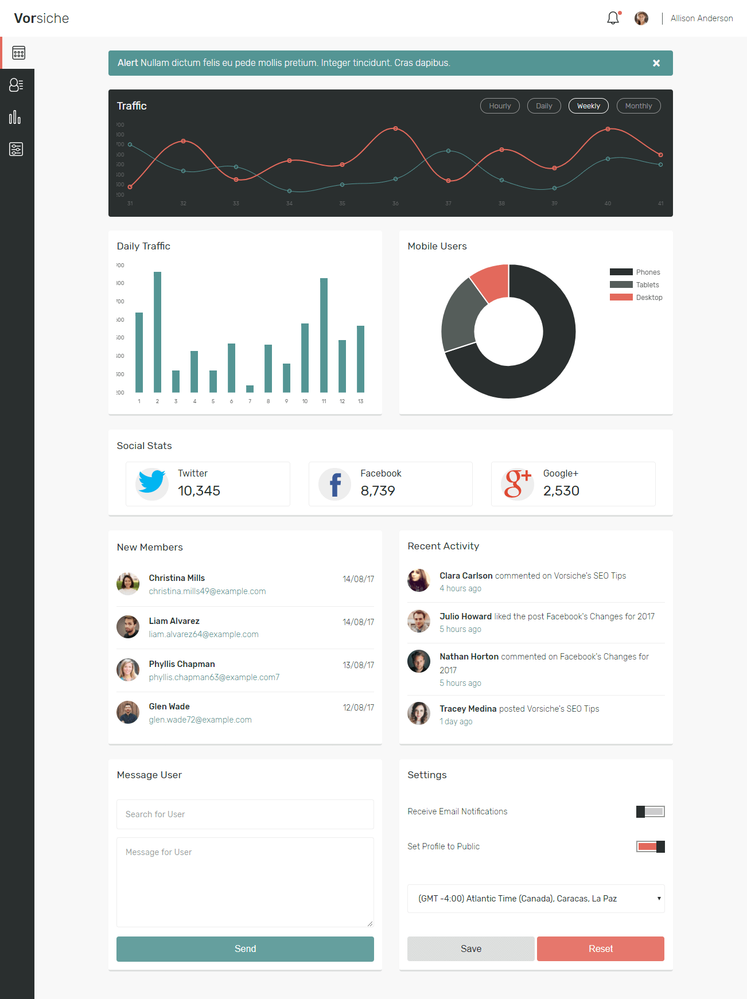
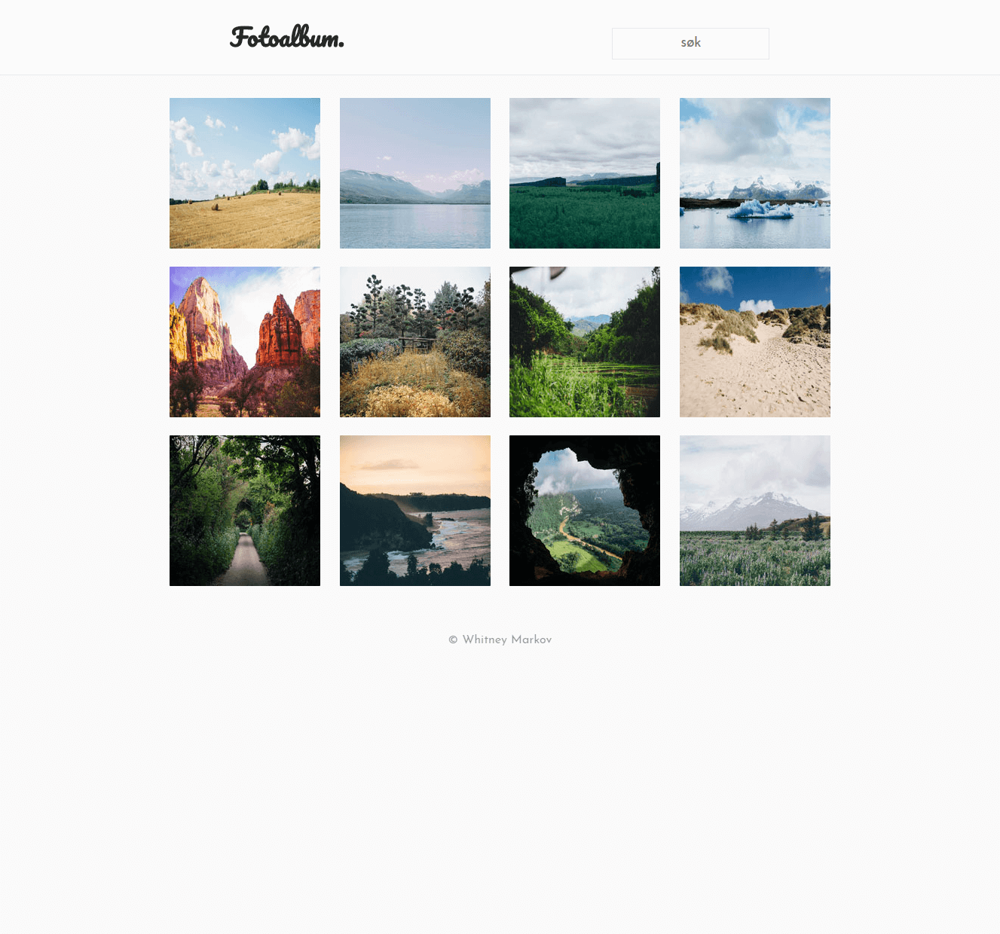
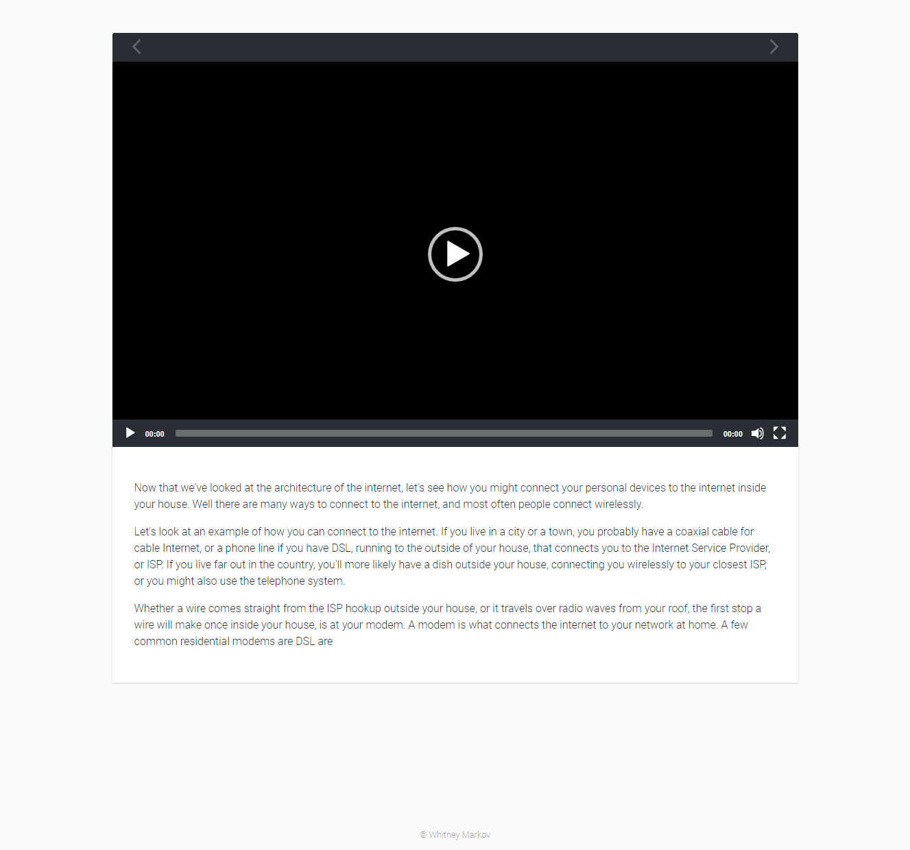
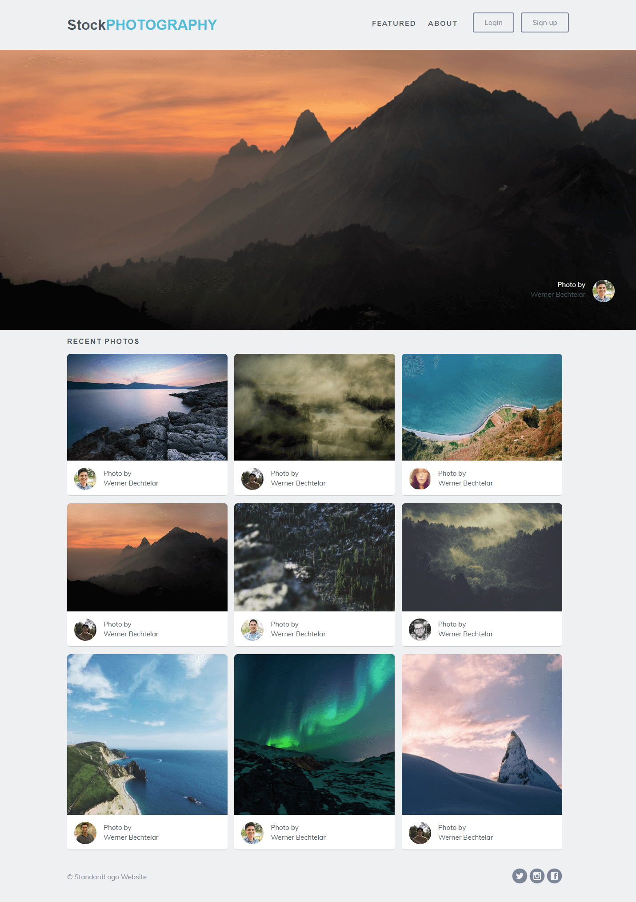

Projects

Employee Directory
A prototype employee directory using a public API to generate random employees
Skills used:
APIs, JSON, AJAX, Sass, JavaScript, jQuery, SVG

Web Application Dashboard
An interactive dashboard for a web application
Skills used:
Chart.js, local storage, Sass, JavaScript, jQuery, SVG

Interactive Photo Gallery
A photo gallery with search functionality and lightbox implementation
Skills used:
Sass, JavaScript, jQuery

Interactive Video Player
A video player that synchronises audio and visual transcripts
Skills used:
HTML5 Video API, Sass, JavaScript

Performance Optimisation
Optimised a website to improve its speed and performance
Skills used:
Gulp, Babel, Sass, JavaScript, SVG